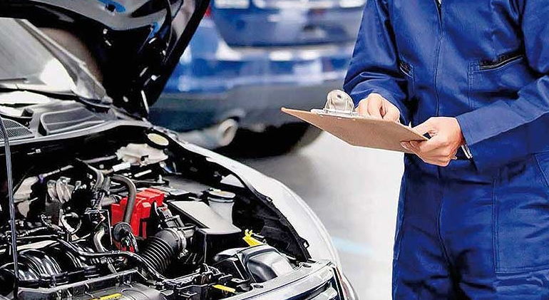

En este blog hablaremos de que un coche en su manera mas basica y simpre , para
que cualquier persona lo pueda entender por ejemplo¿Que es lo que lo hace
funcioar?
Desarollo
hablaremos de una manera basica y sencilla de lo que es un automovil , esto para
cualquer persona lo entineda
y así poder ayudarlos a conocer un poco mejor sus coches ya sea solo para
comprender nuestros automoviles o simplemente
para aquella persona que inicia su amor por estas maquinas tan magnificas
Motivación
Mi motivación para hacer este blog es mi amor y pasión por estas maquinas tan
asombrosas
las cuales todos los dias están presentes en nuestra vida pero muy pocas veces
nos detenemos
entenderlas y saber como funcionan.

mecanica automotríz
top 10
12/11/2021
Top 10 Mejores autos (según mi opinión)
En la siguiente lista repasaremos los mejores automoviles de conbustión
interna
segun mi opinión
Ford Focus RS
Mercedes Benz AMG GT63
Mercedes Benz Sls AMG
Audi R8 V10
Totoya Supra MK4
Lexus LFA
Porshe 911 turbo
Nissan GTR 35
Tsubaru Impresa hatchback
Datzun 280Z
Datzun 280Z con motor L28
paginas
web
13/11/2021
En la siguiente lista se encuentran las paginas de las cuales sacaremos
la
información para la realisacion de este proyecto
Conoce las partes del coche/carro. Explicación
detallada
/fecha de publicación 11/01/13
/autor:Autoescuela Gala
En este video se nos explica de manera clara y simple cuales son
las parte de un
automovil que todos
conductor debe de conocer, incluyenndo algunas recomendaciones
para manter el
automovil en optimas condiciones, esto en necesario
para así poder evitar cualquier tipo de accidente en un futuro
El Autor del video resumio las partes del vehiculo y unicamente
de enfoco que las
partes basicas que cualquer persona debe de conocer
Sistema de escape
El sistema de escape es una de las partes mas
importantes del un motor de
conbustión interna este se encarga de liberar
los gases que se producen
a la hora de generar la conbustión, sus partes son: el
filtro de aire , este se
encarga de limpirar el aire que se encuentra en el medio
ambiente , esto con el
proposito de evitar que cualquier residuo que se encuentre
en el aire entre al motor
y ocasione algun daño.
Multiple de admición, este se encarga de repartir de manera
equitativa el aire en
cada una de las camaras de combustión del motor.
El multiple de escape, está formado por una serie de tubos
los cuales cumplen la
función de sacar los gases que se producen de la combustión,
existen de distintos
tipos , segun las demandas el motor.
Catalisador, el catalizador es el encargado de filtar los
gases reciduales de la
combustión del motor , en este se encuentran diferentes
capas con distintos
materiales para así poder atrapar algunas de las particulas
mas toxicas y dañinas de
estos gases.
El resonador esta encargado de afinar y disminuir el sonido
del motor, para que así
el sonido no se molesto para las demas personas.
Silenciador, este está encargado de como su nombre lo dice ,
Silenciar o como
coloquialmente se le dice matar el sonido del motor , esto
con el proposito de que
no molestar a las personas y tener un coche silecioso a la
hora de funcionar , su
estructura externa es basicamente una gran caja de metal,
pero en el interior se
encuetra seccionado en forma de laberinto , de manera que
los gases busquen la
manera de salir y tengan un recorrido el cual disminuye su
frecuencia.
Diferencial
diferencia el lo que nos ayuda a girar de manera
estable y sin ningun tipo de
riesgo, y ustedes se preguntaran ¿como funciona?,
bueno primero que todo es
necesario decir que en el momento en el que un automovil gira
las rudas internas y
externas recorren diferentes distancias, así mismo es necesario
que se muevan a
diferentes velocidades para poder lograr hacer estos giros
cerrados de una manera mucho
mas controlada y sin ningun tipo de riesgo,es ahi donde entra en
juego el diferencial el
cual nos permite que las ruedas giren de manera independiente
para así poder realizar
distintos recorridos segun la manera de girar. Normalmente los
automoviles cuentan con
dos diferenciales, uno en la parte de adelante y otro en la
parte de atras, si el carro
es tracción trasera ,la energia se distribuye por medio de una
barra de metal la cual
hacer girar los engranajes que se encuentran dentro del
difernecial para asi poder
trasmitir la potencia hacia los ejes de las ruedad, en el caso
particular de los
automoviles 4X4 cuentan con tres diferenciales para así poder
regular el cambio de
potencia segun los requerimietos necesarios.
El turbo
¿Que es el turbo?, pues bueno el turbo una pieza en
forma de caracola la cual
poseé en su interior una especia de turbina que gira
poder medio de los gases
residuales del motor , este esta conectado directamente
al sistema de escape y
admición del motor, al girar esta turbina con tanta
velocidad ,el turbo
comienza a comprimir aire que se encuentra en la
admosfera y de esta manera
darle una sobre carga de aire al motor ,
logrando así que la
combustion dentro de este sea mucho mas violenta y
produsca mas potencia,
normalmente los turbos estan hechos de hierro colado
para así poder soportar las
altas temperaturas de los gases de escape, así mismo
para tener un optimo
funcionamieto es necesario manerlos bien lubricados para
evitas que sufran un
desgaste prematuro.El turbo es la opción mas "barata" y
común para modificar un
motor y así moder aumentar la potencias de un automovil.
 Contexto
Contexto

 Meme
Meme